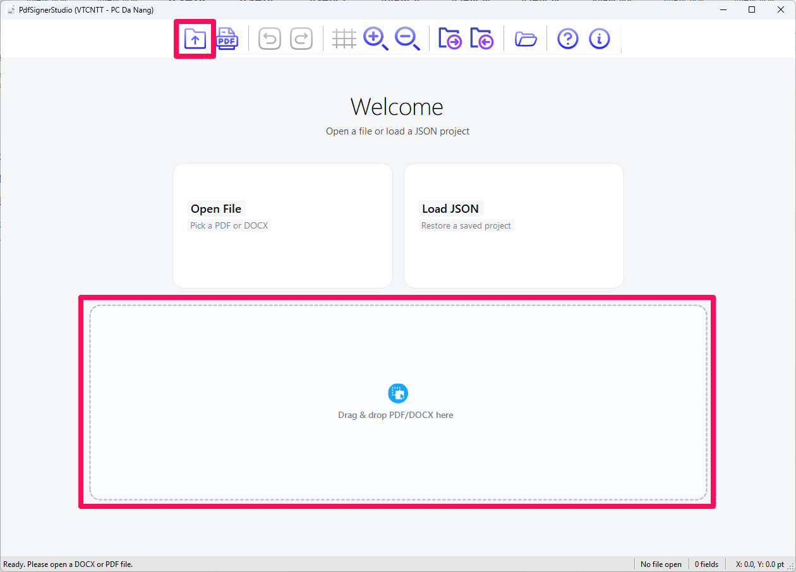
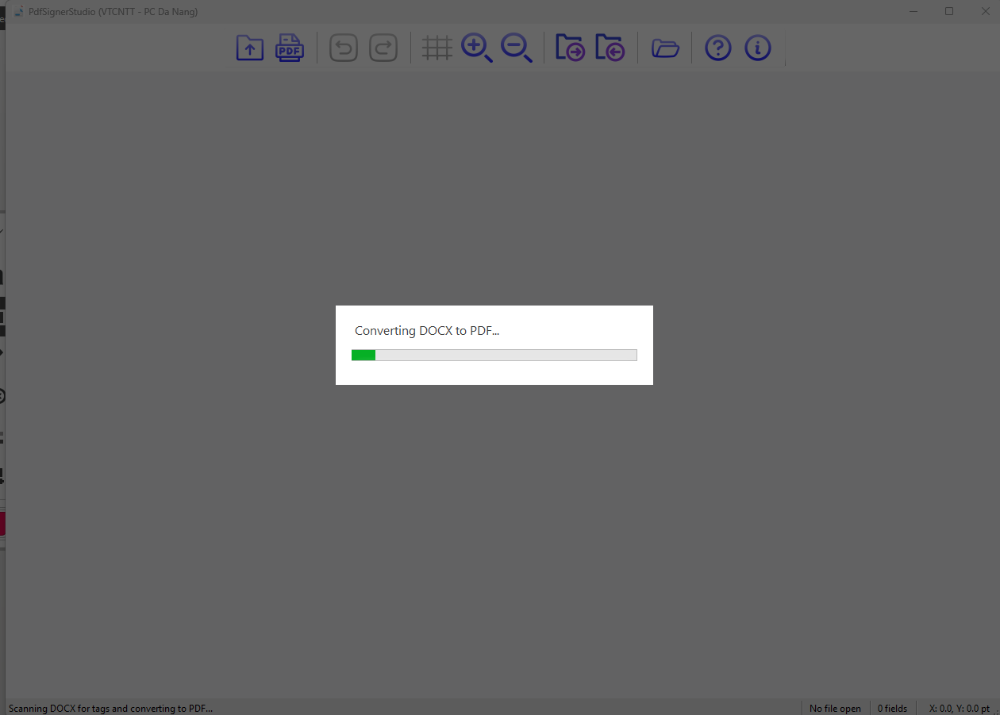
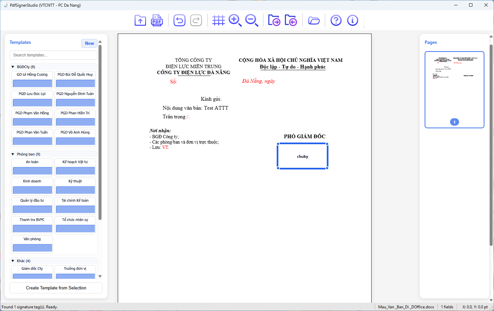
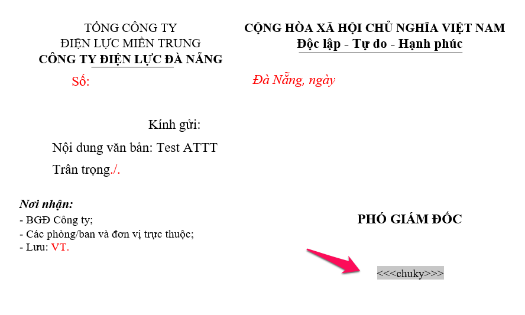

1. Mở một tệp tài liệu
Bạn có thể mở tệp tài liệu theo hai cách:
- Sử dụng nút "Open": Nhấp vào biểu tượngtrên thanh công cụ và chọn tệp DOCX hoặc PDF từ hộp thoại.

- Kéo và thả: Kéo trực tiếp tệp DOCX hoặc PDF từ máy tính của bạn và thả vào cửa sổ chính của ứng dụng.
Lưu ý: Tính năng mở và chuyển đổi tệp DOCX sang PDF chỉ hoạt động trên các máy tính đã cài đặt Microsoft Office. Nếu máy của bạn không có MS Office, bạn chỉ có thể sử dụng chương trình với các tệp PDF.
Khi bạn mở một tệp DOCX, một cửa sổ tiến trình sẽ hiện lên để chương trình tự động chuyển đổi nó sang PDF và quét các thẻ chữ ký. Sau khi quá trình này hoàn tất, các trường chữ ký được tìm thấy sẽ xuất hiện trên màn hình.


Chương trình hỗ trợ tự động nhận diện và chuyển thông tin trường ký nếu file Word (docx) có chứa thông tin dạng <<<truong_chu_ky>>>

Created with the Personal Edition of HelpNDoc: Easy Qt Help documentation editor